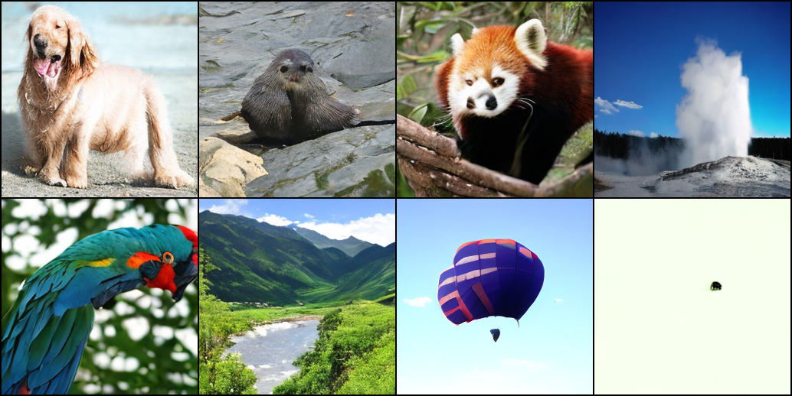
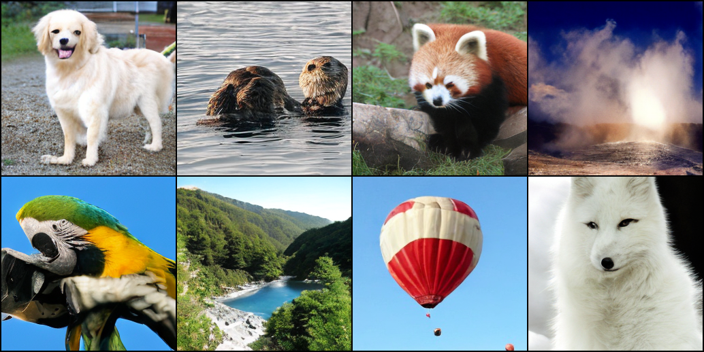
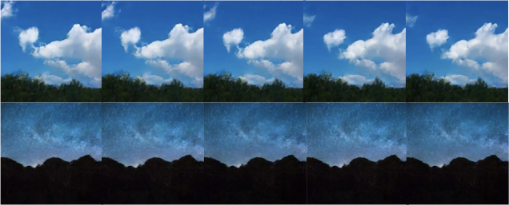
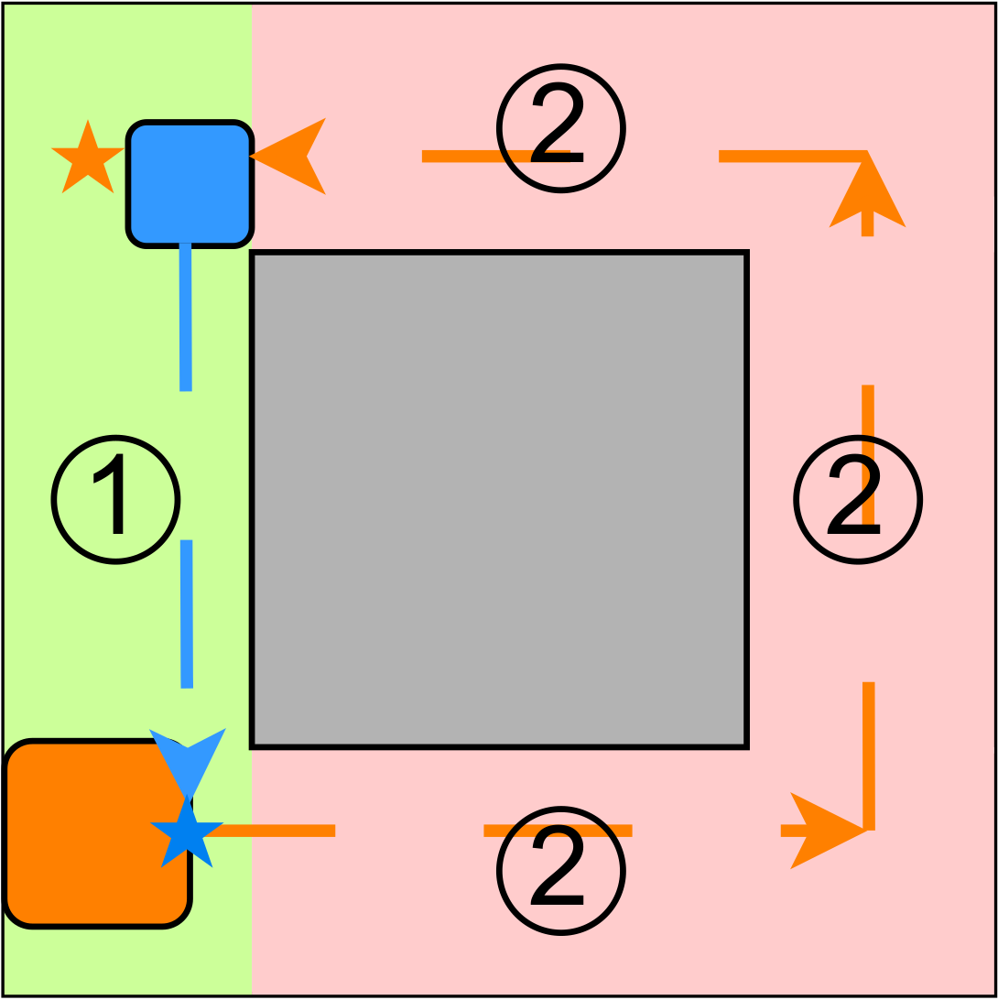
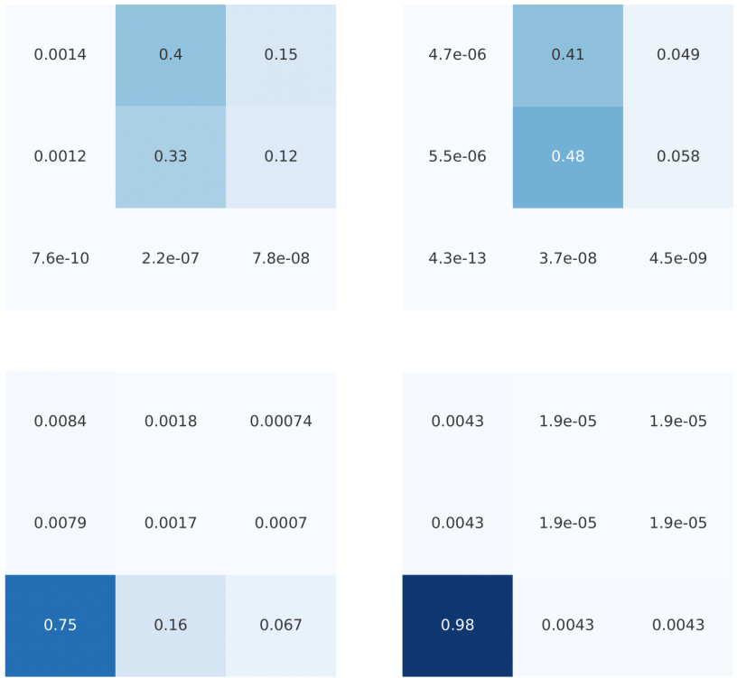
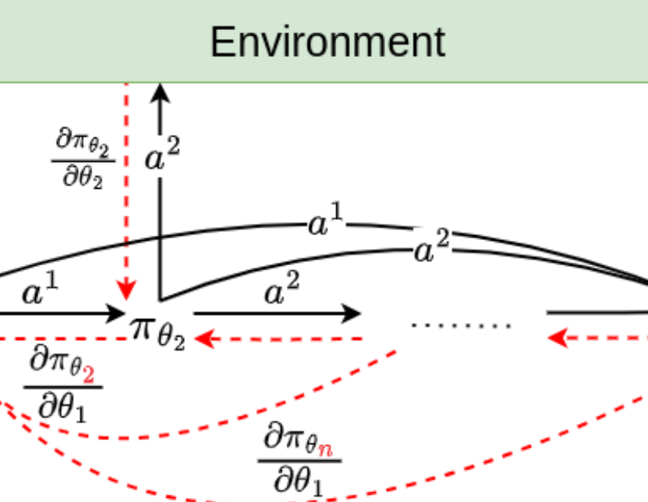
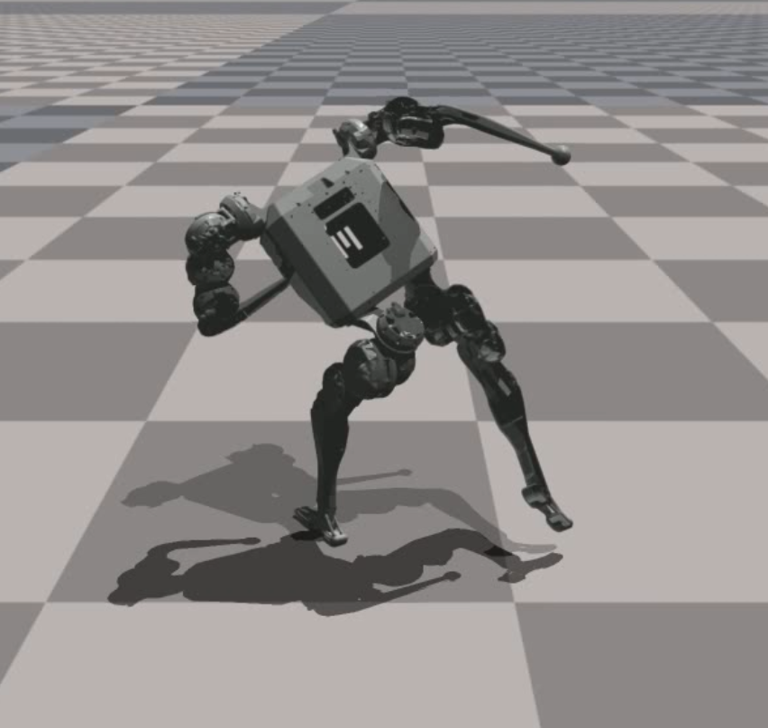
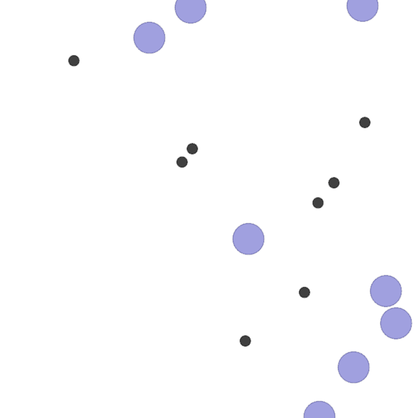

|
Wenshuai Zhao I am a postdoctoral researcher in the Department of Computer Science at Aalto University, Finland. I am supervised by Prof. Juho Kannala and Prof. Arno Solin. My PhD research, supervised by Prof. Joni Pajarinen, focused on reinforcement learning, imitation learning, and their applications in robotics and general decision-making. Currently, my research interests include robot perception, particularly 3D scene understanding and physics-based dynamics modeling.Email: wenshuai [dot] zhao [at] aalto [dot] fi |

|
Selected Publications* Equal contribution † Corresponding authorI have done several projects on generative modeling, reinforcement learning, imitation learning, and curriculum learning. Representative papers are highlighted. Please check my Google Scholar for more details. [Generative Modeling | Multi-agent RL | Robot Learning | Model-based RL] |
Generative Modeling |
|
  |
Sparsely Supervised Diffusion
Wenshuai Zhao, Zhiyuan Li, Yi Zhao, Mohammad Hassan Vali, Martin Trapp, Joni Pajarinen, Juho Kannala, Arno Solin arXiv, 2026 website / code / arXiv Diffusion models often suffer from generating spatially inconsistent images. Instead of enforcing heuristics of physics or geometry prior knowledge to the generation process, we propose sparsely supervised diffusion, a principled method to mitigate this problem by compressing excessive correlation brought by limited data samples. The method is simple yet effective and can be implemented in several lines of code. |
|
 |
Latent-Compressed Variational Autoencoder for Video Diffusion Models
Jiarui Guan, Wenshuai Zhao†, Zhengtao Zou, Juho Kannala, Arno Solin CVPR Findings, 2026 website / code / arXiv Video generation is usually performed in a well structured latent space given by VAE. We propose a latent compressed VAE to remove the high-frequency components of video latent while offloading the high-frequency reconstruction to the decoder. In this way, the VAE encodes the video into diffusion friendly latent and improves the video generation quality. |
Multi-agent Reinforcement Learning |

|
Learning Progress Driven Multi-Agent Curriculum
Wenshuai Zhao, Zhiyuan Li, Joni Pajarinen ICML, 2025 website / code / arXiv We show two flaws in existing reward based curriculum learning algorithms when generating number of agents as curriculum in MARL. Instead, we propose a learning progress metric as a new optimization objective which generates curriculum maximizing the learning progress of agents. |
|
 |
AgentMixer: Multi-Agent Correlated Policy Factorization
Zhiyuan Li, Wenshuai Zhao, Lijun Wu, Joni Pajarinen AAAI, 2025 code / arXiv We propose multi-agent correlated policy factorization under CTDE, in order to overcome the asymmetric learning failure when naively distill individual policies from a joint policy. |
|
 |
Optimistic Multi-Agent Policy Gradient
Wenshuai Zhao, Yi Zhao, Zhiyuan Li, Juho Kannala, Joni Pajarinen ICML, 2024 website / code / arXiv In order to overcome the relative overgeneralization problem in multi agent learning, we propose to enable optimism in multi-agent policy gradient methods by reshaping advantages. |
|
 |
Backpropagation Through Agents
Zhiyuan Li, Wenshuai Zhao, Lijun Wu, Joni Pajarinen AAAI, 2024 code / arXiv We propose to backpropogate the gradients through action chains in auto-regressive based MARL methods. |
Robot Learning |
|
 |
Bi-Level Motion Imitation for Humanoid Robots
Wenshuai Zhao, Yi Zhao, Joni Pajarinen, Michael Muehlebach CoRL, 2024 website / code / arXiv We propose a bi-level optimization framework to address the issue of physically infeasible motion data in humanoid imitation learning. The method alternates between optimizing the robot's policy and modifying the reference motions, while using a latent space regularization to preserve the original motion patterns. |
|
 |
Exploiting Local Observations for Robust Robot Learning
Wenshuai Zhao*, Eetu-Aleksi Rantala*, Sahar Salimpour, Zhiyuan Li, Joni Pajarinen, Jorge Pena Queralta arXiv, 2025 code / arXiv We show that in many multi agent systems where agents are weakly coupled, partial observation can still enable near-optimal decision making. Moreover, in a mobile robot manipulator, we show partial observation of agents can improve robustness to agent failure. |
Model-based Reinforcement Learning |

|
Efficient Reinforcement Learning by Guiding World Models with Non-Curated Data
Yi Zhao, Aidan Scannell, Wenshuai Zhao, Yuxin Hou, Tianyu Cui, Le Chen, Dieter Büchler, Arno Solin, Juho Kannala, Joni Pajarinen ICLR, 2026 website / code / paper We propose two practical techniques to enable efficient offline-to-online RL using non-curated robot data. |
|
|
Simplified Temporal Consistency Reinforcement Learning
Yi Zhao, Wenshuai Zhao, Rinu Boney, Juho Kannala, Joni Pajarinen ICML, 2023 code / arXiv We propose a simple but effective model-based reinforcement learning algorithm relying only on a latent dynamics model trained by latent temporal consistency. |
|
|
|
Design and source code from Jon Barron's website |